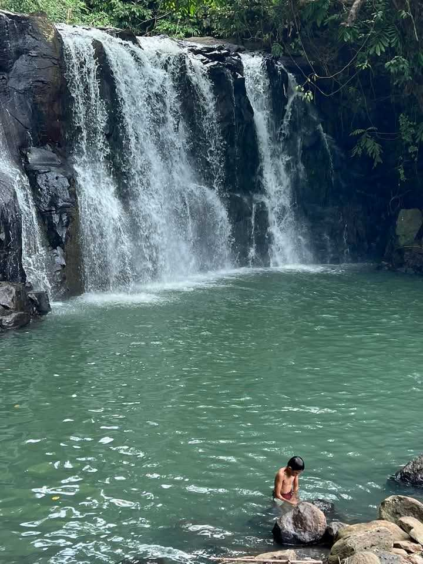

Talaongan Beach Resort
Enjoy the serene view and crystal-clear water of Zamboanga's finest beach.

Unity Park Dao, Pagdian
Relax and enjoy the view at one of the most beautiful parks in the region.

Majestic Waterfalls
Experience the beauty and power of the region's iconic waterfalls.